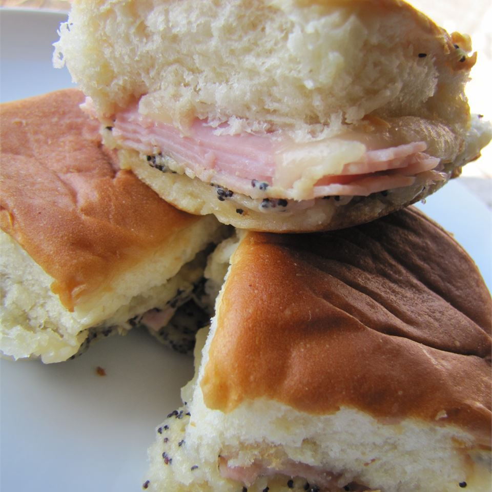

Ham sandwhich

Ham n cheese bitches
han and ham and cheese and cheese
Ingredients
- 1 c butter
- 3 tbsp poppy seeds
- 1 onion grated
- worcestershire
- 10 pounds ham
- 2 slices of bread
Directions
- Preheat oven to 350 degrees F (175 degrees C).
- In a medium bowl, mix together butter, poppy seeds, onion, Worcestershire sauce and prepared Dijon-style mustard.
- Slice rolls in half horizontally and set aside tops. Spread bottoms with the butter mixture. Top with ham and Swiss cheese. Replace tops.
- Arrange rolls in a single layer in a medium baking dish. Bake in the preheated oven 10 to 12 minutes, until rolls are lightly browned and cheese is melted.